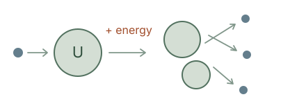
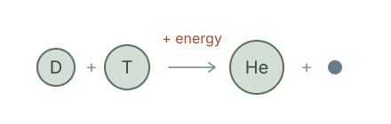

Updated 6 Nov 202642 organizations · 15 reactor configurations
TOKAMAK · MAGNETIC CONFINEMENT
Magnetic fields confine a ring-shaped plasma in a tokamak
01 / FROM NUCLEI TO A POWER PLANT
From fusion reactions to electricity
Fusion joins light atomic nuclei to form heavier ones, releasing
energy. This example follows deuterium and
tritium (D–T), two forms of hydrogen, from the reaction to
electricity exported by a power plant
Fully fusing one gram of D–T releases roughly as much energy as
burning eight tonnes of oil. Yet no fusion power plant has produced
electricity, and building one remains a major scientific and
engineering challenge. Researchers and companies are pursuing it
because it could help meet the world's growing energy needs with
electricity day and night, helping replace our use of fossil fuels.
DEUTERIUM + TRITIUM
Particles not to scale
Fusion fuels
Deuterium–tritium (D–T) needs less demanding plasma conditions than
other candidate fuels, making it a leading choice for proposed
fusion power plants. However, its energetic neutrons damage
materials, and a plant must produce fresh tritium from lithium.
Compare D–T, deuterium–deuterium, deuterium–helium-3, and
proton–boron-11: what each fuel offers and what it takes to use it
Fusion in the energy system
Today's nuclear power stations use fission.
Fusion is a different nuclear reaction, still being
developed for electricity generation. Both release energy from
atomic nuclei — the centres of atoms
Supplies electricity today
Fission splits heavy nuclei

Neutron + uraniumSmaller nuclei + neutrons
A neutron can split a heavy nucleus such as uranium, releasing
energy and more neutrons. Those neutrons can split other nuclei,
sustaining a chain reaction that a power station controls
Spent fuel remains radioactive and needs long-term management
No grid electricity yet
Fusion joins light nuclei

Deuterium + tritiumHelium-4 + neutron
In D–T fusion, deuterium and tritium combine into helium and a
neutron, releasing energy. Keeping the fuel hot and confined
enough to sustain fusion is one of the central challenges
Tritium is radioactive, and fusion neutrons can make reactor
materials radioactive too
Different reactions, a familiar route to electricity:
fission plants and most proposed fusion plants use the released
energy as heat to drive a turbine and generator. Reaction sketches
above are schematic, not to scale
What fusion could offer
More energy from each gram. Fully reacting D–T
fuel releases about four times as much energy per gram as
fissioning uranium-235, and millions of times more than burning
fossil fuels. These are fuel-level comparisons; electricity
output would be lower after conversion losses and plant power use
Potentially shorter-lived waste. D–T
fusion needs no uranium or plutonium fuel and produces no spent
fission fuel. Choosing suitable reactor materials could make its
radioactive waste shorter-lived and easier to manage. It is not
waste-free: radioactive tritium and reactor components made
radioactive by neutrons still need careful handling and disposal
Where the world's electricity comes from
2025 · Approximate share of global electricity generation
Inside renewables · Share of all electricity generation, 2025
Hydro13.9%
Wind8.5%
Solar PV8.3%
Other renewables3.0%
Together ≈34% of world electricity. Figures rounded independently.
Other renewables includes bioenergy and waste, geothermal,
concentrating solar power and marine energy.
IEA · Renewable generation by source ↗
Fusion: 0%
No fusion power station supplies electricity to the grid yet
IEA · Global Energy Review 2026 ↗
· Rounded estimates. Electricity generation only; direct fuel use
for transport and heating is outside this chart
Growing demand, including AI
The IEA projects electricity use by all data centres to nearly
double by 2030, reaching about 3% of global electricity
demand. AI-focused facilities are growing faster
AI's appetite for electricity has helped renew interest in
fusion. Google, for example, has invested in fusion and agreed
to buy electricity from a future plant. Fusion could eventually
serve computing, industry and electrified transport, but today's
data centres rely on existing energy sources
Compare fusion, fission and six other energy sources
Coal, gas, oil and nuclear fuels store energy in matter. Solar, wind
and hydro collect natural energy flows, so energy per gram of fuel
is not a useful comparison across all eight
How each source supplies electricity and what limits it
Scroll sideways to compare →
Source
Electricity supply
Main constraints
Fusion · D–T
Experimental today; no grid electricity yet. Proposed
plants would use heat from joining light nuclei
Net electricity, tritium breeding, durable materials and
economic operation remain to be demonstrated together
Fission
Operating power stations use heat from splitting heavy
nuclei, without needing sunlight or wind
Construction time and cost, cooling, and long-term
spent-fuel management
Coal
Burns mined fuel to make steam; generation can be
scheduled
CO₂ emissions, air pollution, ash and mining impacts
Natural gas
Burns gas in a turbine; combined-cycle plants also use
the exhaust heat to make steam and generate more electricity
CO₂ emissions, methane leaks along the supply chain, and
dependence on fuel supply and prices
Oil
Burns liquid fuel in engines, turbines or boilers; stored
fuel supports generation on demand
CO₂ emissions, air pollution and a continuing supply of
fuel
Solar · PV
Converts sunlight directly into electricity; output
follows daylight and weather
Variable output; storage, transmission and other
generators help balance supply
Wind
Moving air turns a generator; output varies with wind
conditions
Grid balancing, suitable sites and wildlife impacts
Hydro
Moving water turns a turbine; reservoirs can store water
and adjust output
River geography, water availability and effects on river
ecosystems
Sources and calculation
The fuel comparison assumes a D–T mixture with equal numbers of
deuterium and tritium nuclei, fully reacted. At 17.6 MeV per
reaction, one gram releases about 340 GJ, or 94,000 kWh of heat.
Electricity output would be lower after conversion losses and the
plant's own power use. Lithium for tritium breeding and the
plant's materials are additional inputs.
IEA · Global Energy Review 2026, electricity supply ↗
· 2025 estimates, shown as whole percentages. Bar widths use
the report's generation totals: coal 10,858 TWh, renewables
10,808 TWh, gas 6,822 TWh and nuclear 2,858 TWh, out of
32,132 TWh worldwide. Oil and other sources make up the remainder
IEA · renewable generation by source, 2015–2025 ↗
· The 2025 breakdown uses hydro 4,470.2 TWh, wind 2,723.3 TWh,
solar PV 2,653.1 TWh and other renewables 961.2 TWh (bioenergy
and waste 840.3 TWh, plus other sources 120.9 TWh). Each share
is divided by 32,132 TWh and rounded to one decimal place
Select a configuration, rotate the model, and inspect its
components
Engineering and related projects
ENGINEERING CHALLENGE
Read the operating sequence
Animations show the operating sequence, with timing slowed for
explanation.
03 / ENERGY ACCOUNTING
Fusion gain and net electricity
To supply electricity to the grid, a fusion plant must generate more
than it uses to start and sustain the reaction and run the rest of
the facility. The surplus is its net electricity. Each gain
measurement below counts a different part of that process
● EXPERIMENT
NIF
4.13target gain
The National Ignition Facility (NIF) is a laser research facility
at Lawrence Livermore National Laboratory in California. On 7
April 2025, a NIF experiment released 8.6 ± 0.45 megajoules (MJ)
of fusion energy from 2.08 MJ of laser light delivered to a target.
The ratio is 4.13, the highest target gain in this snapshot.
The 2.08 MJ counts the light arriving at the target. The lasers
consumed much more electricity to produce that light, and the
facility used electricity for other systems. Those demands are
outside this ratio.
NIF does not generate electricity. Its fusion output is measured
as energy released by the reaction.◇ DESIGN TARGET
ITER
10plasma Q
ITER is an international experimental fusion reactor being built
in southern France by seven partners, including the European
Union. It aims to produce 500 megawatts (MW) of fusion power while
delivering 50 MW of heating to the plasma. Dividing 500 by 50
gives Q = 10. MW measures a rate of energy production or use.
The 50 MW counts heat reaching the plasma. Generating that heating
requires more electricity; magnets, cooling and other systems add
further demand. The 500 MW is fusion power, before any conversion
into electricity.
Q = 10 is a research goal. ITER has no system for generating
electricity.○ CURRENT STATUS
Electrical recovery
Not yetnet electricity demonstrated
Some pulsed designs aim to recover electricity from their magnets
or plasma after each pulse. Recovered energy can include electricity
supplied to drive the pulse; it is not all new energy from fusion.
For example, a pulse uses 100 MJ of electricity and its recovery
system returns 102 MJ. Pumps, cooling and other plant systems
consume another 3 MJ, leaving a net result of −1 MJ.
102 − 100 − 3 = −1 MJ
This is an illustrative example. A complete accounting also
requires the same stored energy at the start and end of the cycle.
To supply electricity to the grid, a fusion plant's net output
must be greater than zero after all its own consumption. Scaling
fusion power also requires reliable, economical operation.
A positive result must account for the entire plant, not just
energy recovered after a pulse.
Power balance
Published example scenario
Show the accounting
Assumptions, omissions, and target cost
The model excludes useful recovery of supplied heating energy,
blanket multiplication, transient storage, maintenance and capital
costs. Auxiliary demand excludes the driver counted separately.
Finite Q with zero external heating does not model ignition.
Experimental results
Compare results within each measurement and operating regime
04 / THE FUSION ATLAS
Organizations and projects
Research programs, reactor developers, and suppliers, with
reported experiments, design studies, and future targets
identified separately
Companies by approach
Each company is counted once by its primary approach. Public
programmes and supplier-only companies are excluded. Select a bar
to see the companies
More filters
05 / ENGINEERING CHALLENGES
Power-plant engineering
Fuel supply, materials, heat extraction, and maintenance determine
whether a reactor can operate reliably as a power plant
Sources and methods
Research snapshot · 22 October 2026
How to read the evidence
Experiments report observations, models describe simulations or
design studies, and targets describe announced plans. Passing a
target date does not establish that it was met. Component tests
and predecessor experiments are identified separately.
Sources include scientific publications, public research
programs, and company announcements. Company-reported results
are attributed and are not treated as independent verification.
Scope and limitations
This selection covers 42 organizations and 15 reactor
configurations. It is not a census of every fusion project.
Profiles link to the sources behind each claim; the downloadable
dataset preserves dates, measurement boundaries, and
qualifications.
Map positions are approximate city or area centers; unknown or
unselected sites are left unmapped. Financing records preserve
currencies, dates, revisions, and conditions.